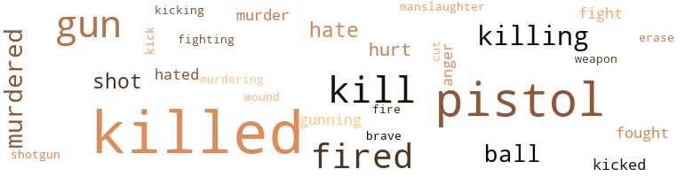

Lancaster Triple Thousand, by Woods, Williams B. (1956)
6 music-related terms matched in this text.
Most frequent terms in this topic: instrument (3); kicking (1); hurdy-gurdy (1); dance (1)
barrel_organ.n.01
Definition: a musical instrument that makes music by rotation of a cylinder studded with pegs
| word | sentence |
|---|---|
| hurdy-gurdy | At the end of the hallway , he suddenly remembered where the hurdy-gurdy was kept . |
dance.n.01
Definition: an artistic form of nonverbal communication
| word | sentence |
|---|---|
| dance | Joan got up off the bed and walked toward him , doing a provocative little dance that sent a hot shiver through him . |
kick.v.04
Definition: kick a leg up
| word | sentence |
|---|---|
| kicking | It became a source of terrible worry to the doc , thinking how low his father was in not putting his money in the bank , coming home drunk , and kicking his mother and sisters around . |
musical_instrument.n.01
Definition: any of various devices or contrivances that can be used to produce musical tones or sounds
| word | sentence |
|---|---|
| instrument | This was the first time any - one had ever played this instrument there . |
| instrument | How strange it was , he thought , to see a kid playing this instrument at this time in the morning . |
| instrument | I found him a little way down the hall , in one of the reporters ' offices , playing some kind of instrument - I do n't know what you would call it . |
164 violence-related terms matched in this text.
Most frequent terms in this topic: killed (42); pistol (26); fired (12); kill (11); gun (11)
anger.n.01
Definition: a strong emotion; a feeling that is oriented toward some real or supposed grievance
| word | sentence |
|---|---|
| anger | His voice was thick with anger . |
| anger | Plaster was now white-hot with anger . |
cut.n.05
Definition: a wound made by cutting
| word | sentence |
|---|---|
| cut | The doctor had advised him not to work too hard because he had a pretty bad cut over the left eye . |
erase.v.01
Definition: remove from memory or existence
| word | sentence |
|---|---|
| erase | Rain was falling in a steady downpour , but it did not erase the thoughts from Plaster 's mind . |
fight.n.05
Definition: a boxing or wrestling match
| word | sentence |
|---|---|
| fight | " Come out and fight , you dirty dog , " Plaster shouted , firing two shots at Foul . |
fight.v.02
Definition: fight against or resist strongly
| word | sentence |
|---|---|
| fight | He tried to fight against the idea of being run down by one of the boxcars rolling down the tracks near him . |
| fought | They had always fought like cave men . |
| fought | Plaster fought desperately to rid himself of the ropes . |
| fighting | Plaster stood there stubborn and impatient , fighting his desire to do what she wanted him to do . |
gun.n.01
Definition: a weapon that discharges a missile at high velocity (especially from a metal tube or barrel)
| word | sentence |
|---|---|
| gun | " It was about a month ago and the doc gave me a gun , and a few shiny new bills that added up to about four thousand dollars . |
| guns | Suddenly Sergeant White called out , " Let 's go , Plaster ; we got a call from an outsider , saying that a few nuts are having it out with guns on Smith Road . " |
| gun | As they made it they saw Joan standing there , a gun in her hand . |
| guns | Plaster felt a cold chill run through his body , but he stuck to his guns . |
| gun | Plaster dropped his gun and came to a standstill . |
| gun | Mac went for his gun , too , but was too late . |
| gun | The doctor 's arms and legs trembled as he pointed the gun down to - ward Plaster 's body . |
| gun | The last time I saw her , she was upstairs in the bath - room , taking a shower , " added Billy as he ran out of the room with a toy gun in his hand . |
| Gun | Plaster could still see the headlines : " Ex-Marine Cop Kills Three in Gun Fight . " |
| gun | " You might as well drop that gun , because it wo n't do you any good to use it . |
| guns | There were two men standing a short distance down the hall , with Thompson submachine guns . |
| gun | The moonlight revealed to Plaster that the heavy man was carrying a gun - maybe two at that . |
| gun | The guy who was carrying the gun was looking for somebody . |
| gun | Plaster fell back against the wall , the gun in his hand . |
| gun | " Do n't forget I have a gun pointing at yon , " exclaimed Plaster . |
gun.v.01
Definition: shoot with a gun
| word | sentence |
|---|---|
| gunning | For one , who sent you gunning for me ? |
| gunning | " Sure , we came gunning for you because that 's what the boss ordered . |
hate.n.01
Definition: the emotion of intense dislike; a feeling of dislike so strong that it demands action
| word | sentence |
|---|---|
| hate | With all the hate in me I brought the pistol down on my father 's head . |
| hate | Plaster looked at the guy with hate in his eyes . |
hate.v.01
Definition: dislike intensely; feel antipathy or aversion towards
| word | sentence |
|---|---|
| hate | Sure , I hate the doc as much as the others do , but why should I tell you everything I know about him when he 's putting money in my pocket ? " |
| hated | Plaster knew now that the doctor had really hated his father . |
| hate | I hate to run out on you like this , but I must go , " said Plaster . |
| hated | I hated him with all my heart . |
hurt.v.04
Definition: cause damage or affect negatively
| word | sentence |
|---|---|
| hurt | Plaster did n't want to hurt the kid ; he did n't want to do anything , but he asked the boy why he was up there playing so early in the morning . |
kick.v.04
Definition: kick a leg up
| word | sentence |
|---|---|
| kicking | It became a source of terrible worry to the doc , thinking how low his father was in not putting his money in the bank , coming home drunk , and kicking his mother and sisters around . |
kick_back.v.02
Definition: spring back, as from a forceful thrust
| word | sentence |
|---|---|
| kicked | She kicked him on the bed . |
| kicked | One of the boys walked over to where Plaster was lying on the floor , face down , and kicked him on the right side of the face . |
| kick | He would have liked to kick his teeth in , but he knew he would n't last very long if he did . |
kill.v.10
Definition: cause the death of, without intention
| word | sentence |
|---|---|
| killed | You do n't have to worry about me telling the police , because I 'm just looking for the guy who killed the doc 's father . |
| killed | " I wish you would forget about Desoto and the Singles ' case , because it 's going to get us all killed one of these days ; you just wait and see , " said Joan . |
| killed | When this was discovered , everyone thought that Bill had killed his old man and then killed himself . |
| killed | When this was discovered , everyone thought that Bill had killed his old man and then killed himself . |
| killed | " I did n't want it this way , Plaster , but you kept on talking about finding out who killed Mr. Singles . |
| Killing | Killing me wo n't be a hard thing to do , I know , but I 'll tell you one thing , baby , if you do take my life I 'll come back from the dead and get you , " shouted Plaster . |
| killed | The car had scooped her up off the street and killed her instantaneously . |
| killing | " How do you feel about all this killing that has taken place tonight ? " asked Plaster . |
| kill | I know that it takes a lot of guts to kill someone , but it does n't take much to drill two tramps like the two we just put away for the night . |
| killed | They killed a cop . |
| kills | Anyone who kills a cop can forget about making a statement , because we got all the information we need . " |
| killed | Plaster tried to blot out his thoughts about Joan and how he had killed her . |
| killed | The doctor said , " A long time ago my father just about killed my mother . |
| killed | Mac continued , " You know something , Plaster - you almost found out who killed Mr. Singles , but you have n't got a chance now . |
| killed | " You killed my wife , did n't you ? " said Mac grimly . |
| killed | " She was the girl you shot in the house where the sergeant was killed . " |
| kill | " Sure , I work for the doc , and I am the one who shot Sergeant Desoto , but I did n't kill the doctor 's father , " said Mac . |
| killed | " You 'll never find out who killed Mr. Singles , because I am going to make sure of that . |
| killed | Plaster could remember exactly how Mac had told him how he had killed Desoto . |
| killed | " Plaster , " said the doctor , " yes , I killed my father , because he was n't any good . |
| killing | " Do n't worry about me , Doc ; just tell me how you went about killing your father without anyone knowing how the job was done . |
| killed | I guess you know by now that Bill got killed by the falling tree . " |
| killed | Well , I tell you , Plaster , my father was n't good enough to live - that 's why I killed him . |
| killed | That Sergeant Desoto and you were trying to find out who killed my father scared me a little ; therefore I had to find a way to get you two out of the way . |
| kills | It gave him satisfaction to think about the saying : ' One ca n't live long if another kills him . ' |
| killed | Mr. Singles was beginning to fall in love with the olive tree , now that it had killed his daughter , because he knew that there would be lots of money coming in - to be paid to him . |
| killed | But it was a job well done , with no evidence left behind that he had killed his father in cold blood . |
| killing | By the time Bill returned from police headquarters , Ted had done the job of killing the old man , leav - ing his body downstairs in the basement . |
| killed | It was known to be a fact that someone had killed Mr. Singles . |
| killed | The word was going around town that Bill had mur - dered his father and then killed himself . |
| killed | " Now , look here , Desoto , it 's about the guy that was killed a few days ago ; it seems as if all the newspapermen in town know about it ; that is , all except me , " complained Plaster . |
| killed | Who killed the Singles , anyway ? " |
| killed | If you ask me , if it was n't for this tree , my sister would n't have been killed . |
| kill | I 'll tell you one thing , though , this tree is rotten and brings bad luck ; I have to kill it before it kills all of us . " |
| killed | If it 's the last thing I do , I 'll find the hot rods who killed the boy 's father , " remarked Plaster , trying hard to sit up in bed . |
| killing | " I was reading about the case in the papers the other day , and I can understand about the kid falling on the ax and killing him - self , but not the idea of the kid murdering his father in cold blood , the way the papers put it . |
| kill | Sergeant Desoto yelled , " We have n't got any evidence to prove that the kid did n't kill his father , and I 'm sure that if the FBI ca n't find any evidence , there 's not very much we can do , is there ? |
| killed | Back in the hospital bed , Plaster was n't aware that his friend Sergeant Desoto had been shot and killed . |
| kill | At first it did n't seem to be a reasonable thing for someone to kill Desoto ; then another thought struck him : Maybe they thought that Desoto knew too much about the Singles ' case . |
| killed | Now Plaster was certain about what he had told Desoto be - fore he had been shot to death - that Bill Singles had not killed his father . |
| killed | Now that Desoto was out of the way , Plaster was more sure than ever that who - ever had killed Bill 's father must have been trying to find out if anyone was attempting to solve the case in his own way . |
| killed | Be - cause James Plaster had done a little detective work on his own , someone like Sergeant Desoto , the ex-marine from Boston , Mas - sachusetts , had been killed . |
| Kills | Plaster could still see the headlines : " Ex-Marine Cop Kills Three in Gun Fight . " |
| killed | Plaster just could n't stop thinking about the Singles ' case - how everyone was certain that the kid had really killed his father in cold blood ; about Mrs. Singles running off without telling anybody where she was going ; how a cop had been killed because of him . . . shot six times in the head . |
| killed | Plaster just could n't stop thinking about the Singles ' case - how everyone was certain that the kid had really killed his father in cold blood ; about Mrs. Singles running off without telling anybody where she was going ; how a cop had been killed because of him . . . shot six times in the head . |
| kill | But who in hell would want to kill a cop like De - soto ? |
| killed | Plaster knew why , and so did the guy who had killed Desoto . |
| killed | He knew for sure that if he did keep asking the kid questions , there would be a few that he would n't be able to answer - one like , who had killed Mr. Singles in cold blood on Easter night during the time his son was being questioned at the police station ? |
| killed | I had a pal killed by one of you dirty rats a few days ago . |
| kill | Nothing seemed to be real - ants with funny faces ... a man who was hunting Plaster to kill him , with the idea of leaving his body there for the ants . |
| kill | " Look , fatso , " said Plaster grimly , " I do n't know what the hell 's going on around here , but I 'm going to find out if I have to kill you and your dirty friends who are upstairs having a ball . " |
| killed | Two , who killed Mr. Singles ? " |
| killed | Sure , I killed a few guys , but I never killed Sergeant Desoto . |
| killed | Sure , I killed a few guys , but I never killed Sergeant Desoto . |
| killed | " Did n't doc know that Desoto was trying to find out who had killed his father ? " asked Plaster . |
| kill | Put that thing away or you 'll kill all of us , " shouted the girl , pulling herself together . |
| killed | The other two men must have been killed by the explo - sion . |
| kill | When Suddenly found out that I knew he was married , he wanted to kill me . |
| killed | A cop got killed because of me . |
| killed | You have to face the facts - no one 's going to come right up to you and say , ' Well , here 's the lowdown : so and so killed Bill 's father , and John Inkpen fired the shots into Desoto . ' |
killing.n.01
Definition: an event that causes someone to die
| word | sentence |
|---|---|
| killing | I must say that it fooled me too - Bill 's killing himself by falling on the ax , with the tree falling down on him . |
killing.n.02
Definition: the act of terminating a life
| word | sentence |
|---|---|
| killing | Maybe John Foul or Suddenly had something to do with the killing of Desoto , but I do n't know if one of the two did it . " |
| kill | Mrs. Singles ran up to him and said , " I suppose you feel great after all that kill - ing you just did - do n't you ! " |
manslaughter.n.01
Definition: homicide without malice aforethought
| word | sentence |
|---|---|
| manslaughter | Call it manslaughter or whatever you like , but the case is closed . " |
murder.n.01
Definition: unlawful premeditated killing of a human being by a human being
| word | sentence |
|---|---|
| murder | I guess there 's no holiday for murder . " |
| murder | Back at the police headquarters the Northville police were working very hard on the case of the murder of Sergeant Desoto . |
murder.v.01
Definition: kill intentionally and with premeditation
| word | sentence |
|---|---|
| murdered | He remembered what Sergeant Desoto had told him before he was murdered , about the FBI closing the case because they were sure that no one but Bill Singles had murdered his father . |
| murdered | When he gathered this , he soon made up his mind to do the job he had always wanted to do - to take care of his fatherl Ted murdered his father in a simple way . |
| murdered | Sure , everyone thought that Bill murdered his father ; I thought the same tiling until tonight . |
| murdering | " I was reading about the case in the papers the other day , and I can understand about the kid falling on the ax and killing him - self , but not the idea of the kid murdering his father in cold blood , the way the papers put it . |
| murdered | The fact still stands that Bill murdered his father . |
| murdered | From now on , I 'll take orders from you , but it 's going to be hard to find the one who murdered the Singles . |
| murdered | . . . Everyone 's thinking that the kid murdered his father , but you and I know better , do n't we ? " |
musket_ball.n.01
Definition: a solid projectile that is shot by a musket
| word | sentence |
|---|---|
| ball | In this way , by playing ball with the doc , he would find out more . |
| ball | His little sister Joyce was playing ball underneath the olive tree in the front yard . |
| ball | When one of the other kids threw a ball out into the street , she went after the ball - and a car hit her . |
| ball | When one of the other kids threw a ball out into the street , she went after the ball - and a car hit her . |
| ball | " Look , fatso , " said Plaster grimly , " I do n't know what the hell 's going on around here , but I 'm going to find out if I have to kill you and your dirty friends who are upstairs having a ball . " |
open_fire.v.01
Definition: start firing a weapon
| word | sentence |
|---|---|
| fired | She fired a few shots at Plaster as he lay there on the train tracks . |
| fired | Plaster fired two shots through one of the windows , smashing the glass with a loud sound . |
| fired | Plaster fired four rounds into the cop . |
| fired | Nick fired two shots in the dark room . |
| fired | He fired another shot at him , making the guy groan in pain . |
| fired | He pulled the trigger and fired one shot at Plaster , missing him by about a foot . |
| fire | Plaster opened fire at the same time as the doctor . |
| fired | Desoto was walking toward his house when someone fired at him . |
| fired | Plaster did n't answer any of the questions the doctor fired at him . |
| fired | He fired two shots blindly toward the ceiling , frightening the crowd into a mad panic . |
| fired | I was soon fired from my job and that 's when I decided to take up the doc 's offer . |
| fired | " Well , " continued Suddenly , " when I found out that the doc was the one who had me fired from my job , I was soon beginning to see the light . |
| fired | You have to face the facts - no one 's going to come right up to you and say , ' Well , here 's the lowdown : so and so killed Bill 's father , and John Inkpen fired the shots into Desoto . ' |
pain.v.02
Definition: cause emotional anguish or make miserable
| word | sentence |
|---|---|
| hurt | " Look , " one man said , while the other held him upright in the chair , " we do n't want to hurt you ; the only tiling we would like to know is what the little colored boy had to say when he was up here yesterday morning . " |
| hurt | It hurt Plaster so - just the thought of his friend being knocked off by some no-good gunmen who had never known the Desoto he knew - the hard-fighting marine , at San Diego , California , a few years ago . |
pistol.n.01
Definition: a firearm that is held and fired with one hand
| word | sentence |
|---|---|
| pistol | She dug into the pockets and pulled out a small pistol . |
| pistol | Plaster had not yet noticed that she was pointing the pistol at him , for he was watching the hot sunlight streaming into the room . |
| pistol | Plaster turned around ; all at once he noticed her stand - ing behind him with a pistol in her hand . |
| pistol | She held a pistol in her left hand and pointed with her right hand toward the window . |
| pistol | Joan sud - denly hit Plaster over the head with the pistol ; then she quickly pushed him out the window . |
| pistol | The copper ran toward the house , Plaster covering him all the way with his pistol . |
| pistol | Plaster put his hands to his inner coat pocket , thinking that the doctor was going for his pistol , but he did n't . |
| pistol | Taking his pistol out of its holster , he lay there with both eyes on the office door . |
| pistol | Then he added , " How about pointing that water pistol somewhere else ? " |
| pistol | He walked around him , put the pistol to his back , and told him to find a seat . |
| pistol | He rolled toward the pistol that was lying not far away . |
| pistol | By this time Plaster had reloaded his pistol . |
| pistol | When the two other men had followed the doctor into this door , Plaster ran into the other room , took the doctors pistol , and put it in his left hand . |
| pistol | I had a rope in one hand and my forty-five pistol in my other hand . |
| pistol | With all the hate in me I brought the pistol down on my father 's head . |
| pistol | It lay on the typewriter , the pistol gone . |
| pistol | Desoto felt even more naked than ever when he discovered that he was n't wearing his pistol in his shoulder holster . |
| pistol | " You God - damn no-good Plaster , " Foul spat out , reaching for his pistol . |
| pistol | Plaster had expected Foul to try this , and he caught Foul with a shot from his pistol just as he reached the door . |
| pistol | Plaster calmly placed his pistol into its holster . |
| pistol | " Get up on your feet , you fat ass , " remarked Plaster , pointing the pistol at the man , who was now lying on the floor with his head bashed in , blood gushing from a cut . |
| pistol | Well , we might as well go upstairs and see what our playmates are doing , " said Plaster , taking the pistol from the holster . |
| pistol | " You can put that pistol away , 'cause it wo n't do you any good , " shouted Suddenly . |
| pistol | " Might as well drop that pistol , " said Suddenly again . |
| pistol | Holding the grenade down by his side , he bobbed back and forth nervously , his eyes fixed on Plaster , who was standing there with the pistol in his hand . |
| pistol | Plaster took the pistol out of his shoulder holster and placed it in the glove compartment . |
shoot.v.02
Definition: kill by firing a missile
| word | sentence |
|---|---|
| shot | " She was the girl you shot in the house where the sergeant was killed . " |
| shot | " Sure , I work for the doc , and I am the one who shot Sergeant Desoto , but I did n't kill the doctor 's father , " said Mac . |
| shot | Back in the hospital bed , Plaster was n't aware that his friend Sergeant Desoto had been shot and killed . |
| shot | Now Plaster was certain about what he had told Desoto be - fore he had been shot to death - that Bill Singles had not killed his father . |
shotgun.n.01
Definition: firearm that is a double-barreled smoothbore shoulder weapon for firing shot at short ranges
| word | sentence |
|---|---|
| shotgun | Mr. Bridge came running out of the house with a shotgun in his hand . |
weapon.n.01
Definition: any instrument or instrumentality used in fighting or hunting
| word | sentence |
|---|---|
| weapon | He released his grip on the weapon and reached for the receiver . |
weather.v.01
Definition: face and withstand with courage
| word | sentence |
|---|---|
| brave | She was crying a little , but her lips were forming a brave smile . |
wound.n.01
Definition: an injury to living tissue (especially an injury involving a cut or break in the skin)
| word | sentence |
|---|---|
| wound | Plaster was out cold ; he lay on the floor , blood running from the wound on his head . |
3 religion-related terms matched in this text.
Most frequent terms in this topic: sects (1); church (1); God (1)
church.n.02
Definition: a place for public (especially Christian) worship
| word | sentence |
|---|---|
| church | " Sure , I 'll do that the next time I 'm in church . |
god.n.03
Definition: a man of such superior qualities that he seems like a deity to other people
| word | sentence |
|---|---|
| God | You should thank God for letting your police friends find the door in the wall . " |
sect.n.01
Definition: a subdivision of a larger religious group
| word | sentence |
|---|---|
| sects | The basement floor was covered with ants and other in - sects . |